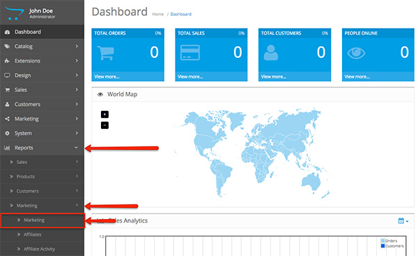
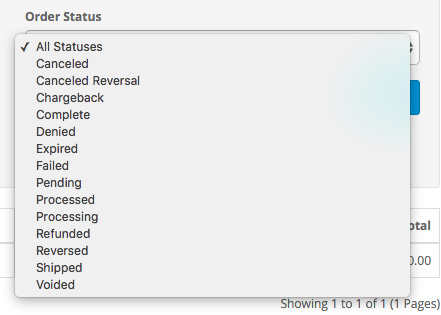

The Marketing Report can be accessed from Reports > Marketing > Marketing in the Admin panel. This report lets you keep track of the marketing campaigns that you have created.

The Marketing Report displays the following information:
Date Start: The date that you have selected upon starting your marketing campaign.
Date End: The date that marks the end of the marketing campaign.
Order Status: The status of the orders that your marketing campaign has generated.

Campaign Name: The name of your marketing campaign.
Code: The tracking code that is displayed at the end of the URL of your marketing campaign.
Clicks: The number of clicks that each marketing campaign has generated.
No. Orders: The number of orders that your marketing campaign has generated.
Total: The amount of revenue generated from the number of orders.